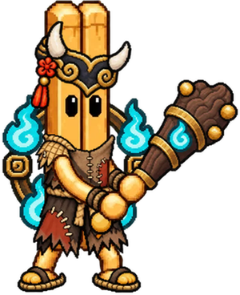
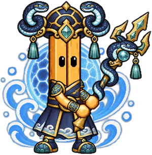
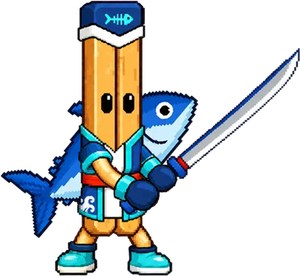
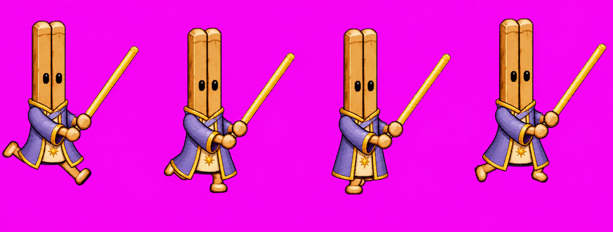
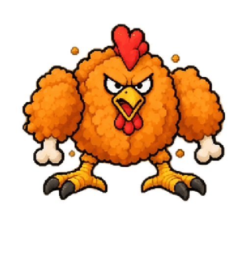
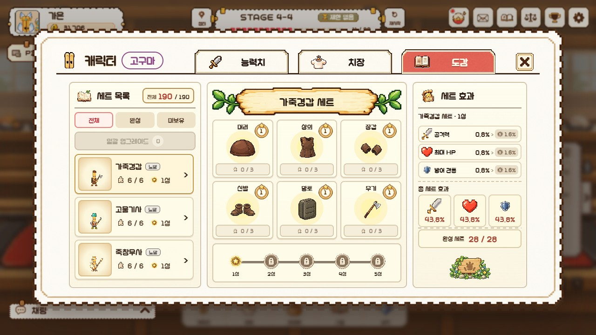
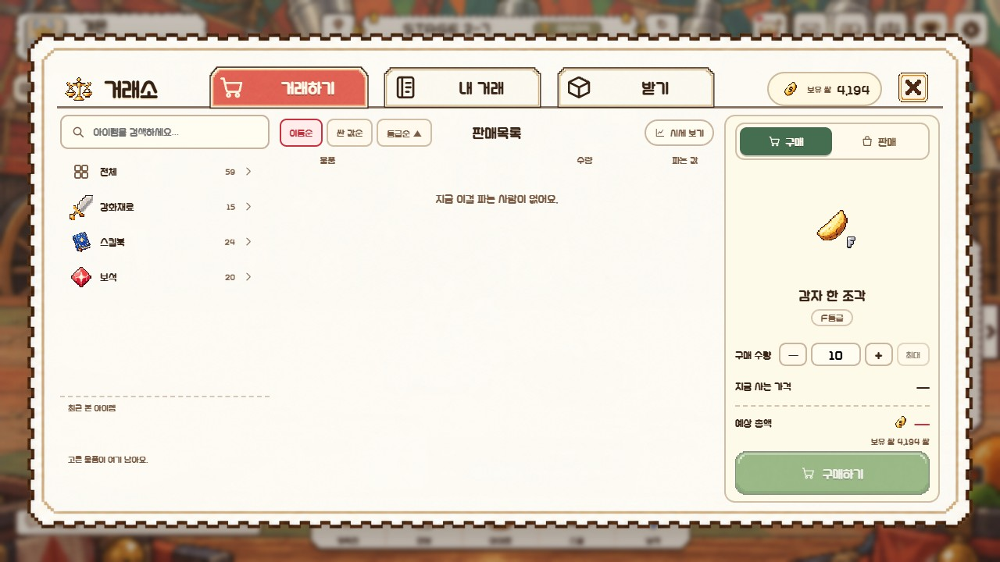

바탕화면에 띄워 두면 젓가락이 알아서 싸우는 게임.
팀을 이끌며 게임의 모든 창이 같은 말투로 보이게 UI 규칙을 정했어요. 그리고 생성 AI가 그린 옷을 게임에 그대로 쓸 수 있도록, 치장을 찍어 내는 제작 방식을 처음부터 설계했어요.
생성 AI 이미지, Python 이미지 처리, UI 디자인




부위를 새로 생성하면 매번 색과 결이 달라지고, 젓가락까지 바뀌었어요. 그래서 원본 마네킹은 고정하고 옷을 하나씩 입히는 방식으로 바꿨어요. 옷 바깥은 한 픽셀도 바뀌지 않아요.

달리기를 한 장씩 그리면 회차마다 옷이 조금씩 흘렀어요. 네 프레임을 한 번에 그리게 하자 프레임 사이 옷 차이가 96.9%에서 6.9%로 줄었어요.


1,800장의 몬스터 프레임을 한 흐름으로 정리했어요. 동작마다 떠 있던 발끝을 모두 바닥에 붙였어요.


창은 종이, 틀은 나무, 강조는 황동. 픽셀이 뭉개지지 않게 640×360을 정수배로만 키우고, 지금 눌러야 할 버튼은 한 화면에 하나만 두었어요.